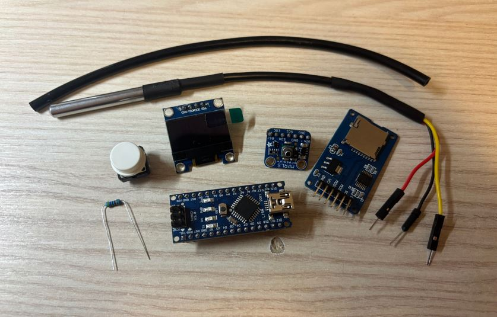
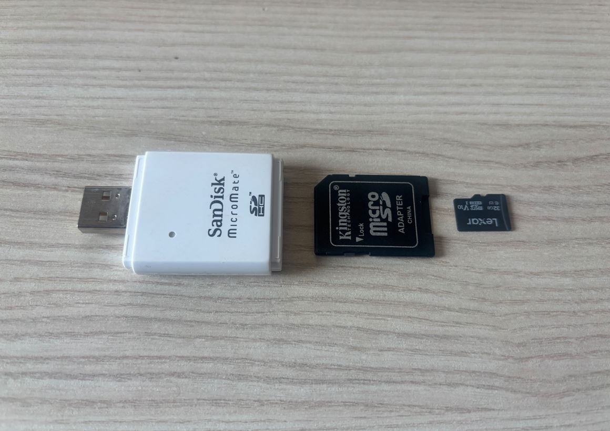
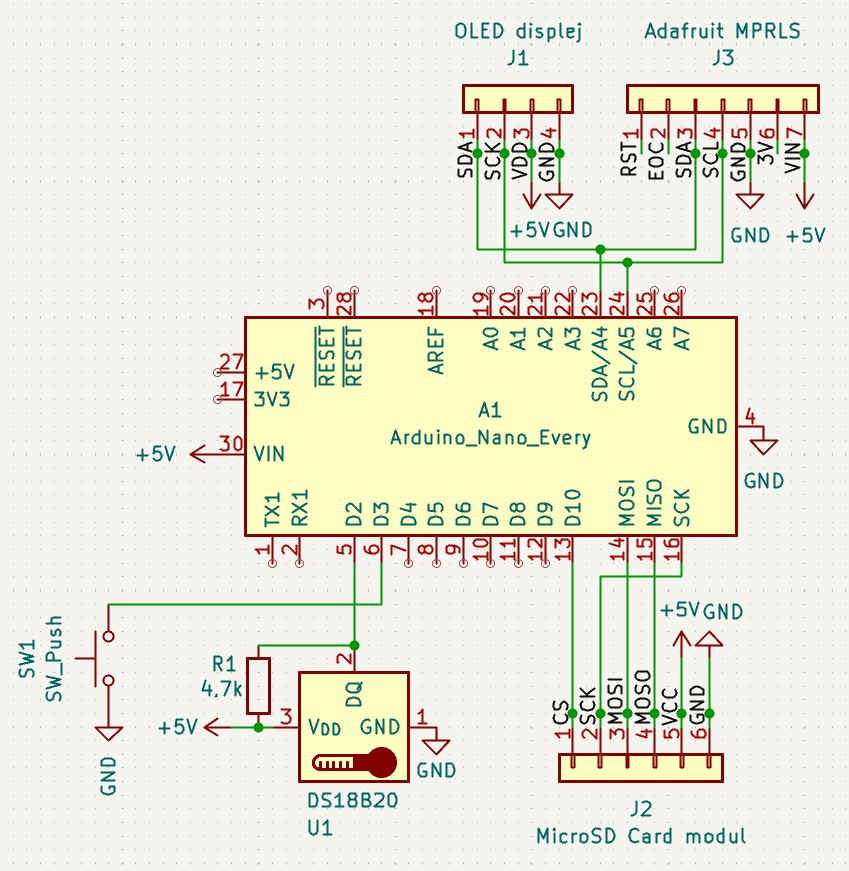
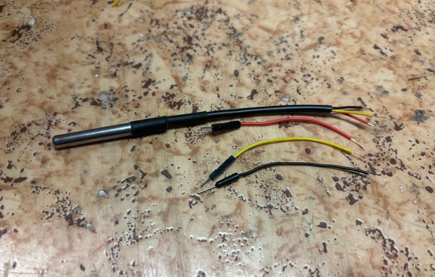
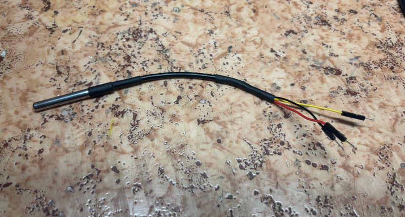
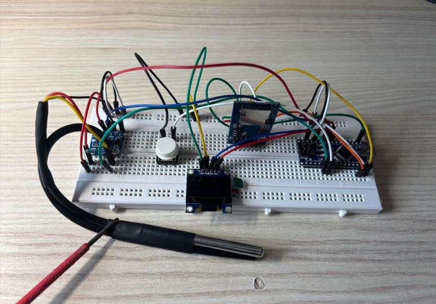
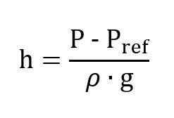
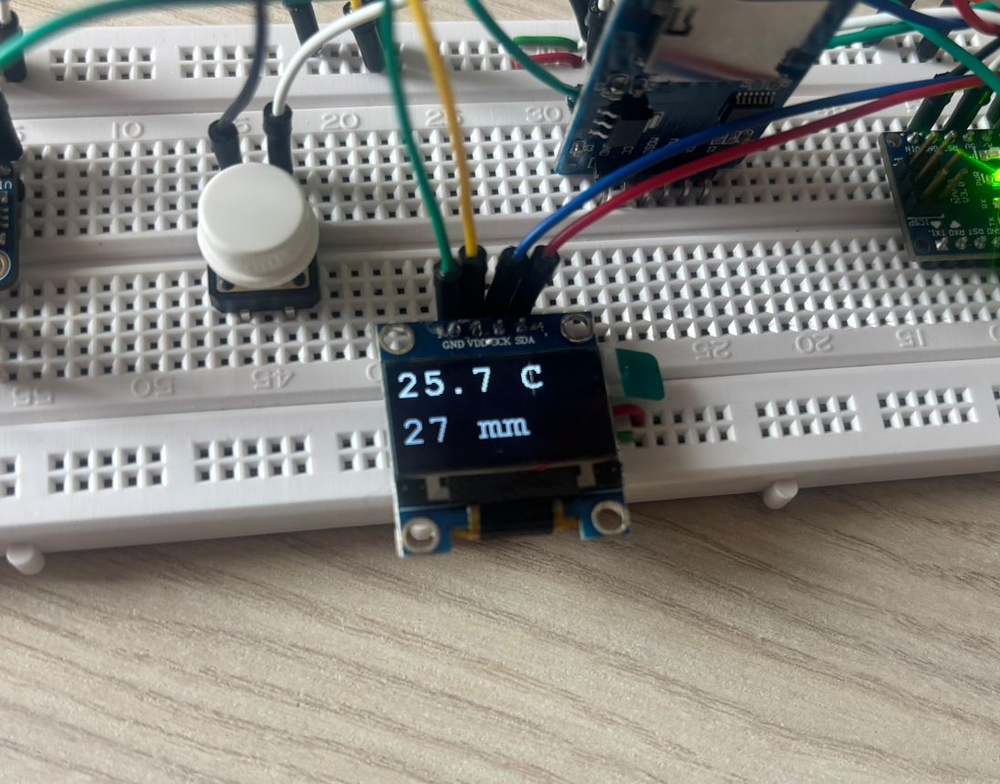
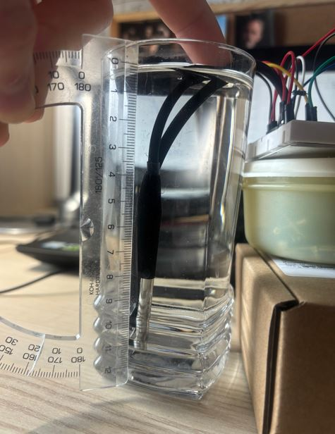
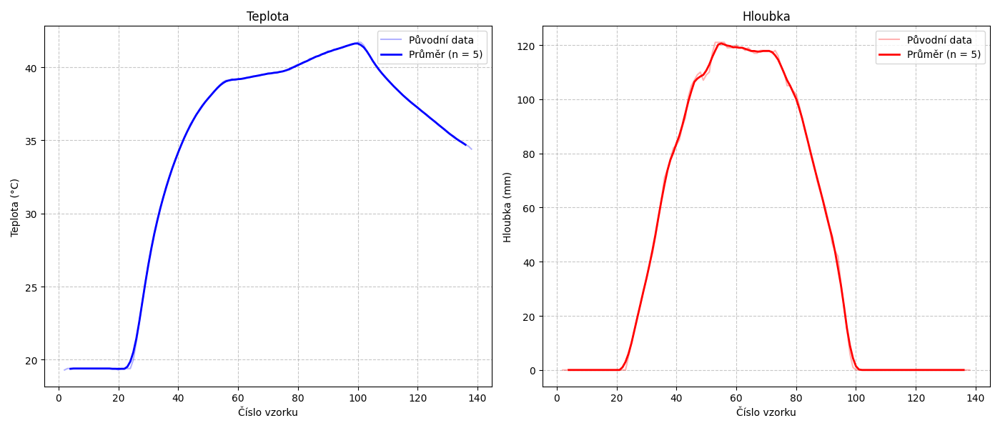

6. týden: Senzory a vstupní zařízení
Během šestého týdne bylo úkolem použít nějaký senzor pro měření fyzikální veličiny pomocí Arduina.
Měření teploty a hloubky
Doma jsem měl nevyužitý senzor teploty a senzor absolutního tlaku, tak jsem se rozhodl postavit přístroj na měření teploty kapaliny a hloubky ponoření sondy. Mozkem zařízení je Arduino Nano napájené z počítače přes USB. Naměřená data se zobrazují na OLED displeji a zároveň se ukládají na SD kartu pro pozdější zpracování a tvorbu grafů. Měření a zápis dat lze bezpečně ukončit stisknutím tlačítka.
Zapojení
Seznam použitých součástek:
- Univerzální nepájivé pole
- Arduino Nano (klon)
- Vodotěsný teploměr DS18B20
- 4,7kΩ rezistor
- MPRLS - tlakový senzor 172kPa I2C 3-5V - Adafruit 3965
- I2C OLED displej 0,96" bílý 128 × 64
- MicroSD Card modul SPI
- 32 GB MicroSD karta Lexar
- MicroSD adaptér Kingston
- Čtečka paměťových karet SanDisk
- Tlačítko TC-1212T (12 × 12 × 7.3 mm)
- LEGO trubička


Teplotní sonda využívá jednovodičovou sběrnici OneWire. Pro její správné fungování je nutné zapojit 4,7kΩ pull-up rezistor mezi napájecí a datový pin. Senzor tlaku MPRLS a OLED displej komunikují přes protokol I2C (dva vodiče - datový SDA a hodinový SCL). Modul čtečky SD karet je připojen přes rozhraní SPI (čtyři vodiče - data do karty MOSI, data z karty MISO, hodinový signál SCK a Chip Select CS).
Zapojení jsem navrhl v programu KiCAD.
Součástky jako Arduino Nano (Arduino_Nano_Every z knihovny MCU_Module),
teplotní senzor DS18B20 (DS18B20), tlačítko (SW_Push)
a rezistor (R) jsou již součástí základních knihoven programu.
Symboly pro ostatní moduly lze stáhnout z internetu, případně je ve schématu nahradit standardními
kolíkovými lištami (např. Conn_01x04_Socket pro OLED displej).

Teplotní sonda se standardně prodává s několikametrovým kabelem. Pro snadnější zapojení do nepájivého pole (breadboardu) jsem kabel zkrátil a na jeho konce připájel kolíkové piny.


Poté jsem obvod zapojil podle připraveného schématu.

Kód
Kód je napsán v prostředí Arduino IDE. Program v pravidelných 800ms intervalech vyčítá hodnoty teploty z teplotní sondy a absolutního tlaku z I2C senzoru. Z naměřeného tlaku a referenční hodnoty pak vypočítává hloubku ponoru podle vzorce:

- h - hloubka ponoření [m]
- P - tlak naměřený pod hladinou [Pa]
- Pref - referenční atmosférický tlak na hladině [Pa]
- ρ - hustota kapaliny [kg/m³]
- g - tíhové zrychlení [m/s²]
Získaná data se průběžně zobrazují na OLED displeji a ukládají do CSV souboru na SD kartu. Stiskem tlačítka lze měření a zápis na kartu bezpečně ukončit.
Použité knihovny:
- Wire - sběrnice I2C pro senzor tlaku a OLED displej
- Adafruit_MPRLS - senzor tlaku
- OneWire - sběrnice 1-Wire pro teplotní senzor
- SPI - sběrnice SPI pro čtečku SD karet
- SD - modul čtečky SD karet
- U8x8lib - OLED displej
Kód v Arduinu:
#include <Wire.h>
#include <Adafruit_MPRLS.h>
#include <OneWire.h>
#include <SPI.h>
#include <SD.h>
#include <U8x8lib.h>
#define ONE_WIRE_BUS 2
#define BUTTON_PIN 3
#define CHIP_SELECT_SD 10
// inicializace periferii
OneWire oneWire(ONE_WIRE_BUS);
Adafruit_MPRLS mprls = Adafruit_MPRLS(-1, -1);
U8X8_SSD1306_128X64_NONAME_HW_I2C display(/* reset=*/ U8X8_PIN_NONE);
// merene hodnoty
float referencePressure = 0.0;
float currentTempC = 0.0;
float currentDepth_m = 0.0;
// rizeni behu
bool isRunning = true;
bool lastButtonState = HIGH;
unsigned long lastSensorReadTime = 0;
// sd karta a data
bool sdReady = false;
unsigned long sampleCount = 0;
void updateDisplay();
void setup() {
pinMode(BUTTON_PIN, INPUT_PULLUP);
// oled displej
display.begin();
display.setPowerSave(0);
display.setFont(u8x8_font_courB18_2x3_r);
display.clear();
// senzor tlaku
if (!mprls.begin()) {
display.print("err tlak");
delay(2000);
display.clear();
}
// sd karta
if (SD.begin(CHIP_SELECT_SD)) {
sdReady = true;
if (SD.exists("data.csv")) SD.remove("data.csv");
// hlavicka csv
File dataFile = SD.open("data.csv", FILE_WRITE);
if (dataFile) {
dataFile.println(F("vzorec,teplota,hloubka"));
dataFile.close();
}
} else {
display.print("err sd");
delay(2000);
display.clear();
}
// kalibrace tlaku
delay(500);
referencePressure = mprls.readPressure();
// start prevodu teploty
oneWire.reset();
oneWire.skip();
oneWire.write(0x44);
updateDisplay();
}
void loop() {
// cteni tlacitka
bool currentButtonState = digitalRead(BUTTON_PIN);
// detekce stisku pro zastaveni
if (currentButtonState == LOW && lastButtonState == HIGH) {
isRunning = false;
display.clear();
display.setCursor(0, 2);
display.print("STOP");
delay(50);
}
lastButtonState = currentButtonState;
// periodicke mereni
if (isRunning && (millis() - lastSensorReadTime >= 800)) {
lastSensorReadTime = millis();
sampleCount++;
// vycteni teploty
oneWire.reset();
oneWire.skip();
oneWire.write(0xBE);
int16_t raw = oneWire.read() | (oneWire.read() << 8);
currentTempC = (float)raw / 16.0;
// novy prevod
oneWire.reset();
oneWire.skip();
oneWire.write(0x44);
// vypocet hloubky
float currentPressure = mprls.readPressure();
currentDepth_m = ((currentPressure - referencePressure) * 100.0) / 9810.0;
if (currentDepth_m < 0) currentDepth_m = 0;
// ulozeni na sd
if (sdReady) {
File dataFile = SD.open("data.csv", FILE_WRITE);
if (dataFile) {
dataFile.print(sampleCount);
dataFile.print(',');
dataFile.print(currentTempC, 1);
dataFile.print(',');
dataFile.println(currentDepth_m, 3);
dataFile.close();
}
}
updateDisplay();
}
}
void updateDisplay() {
display.clear();
// radek 1: teplota
display.setCursor(0, 0);
display.print(currentTempC, 1);
display.print(" C");
// radek 2: hloubka
display.setCursor(0, 4);
int displayDepth_mm = currentDepth_m * 1000;
display.print(displayDepth_mm);
display.print(" mm");
}
Pro následné zpracování dat na počítači jsem vytvořil Python skript.
Ten načte soubor DATA.csv, převede hodnoty hloubky z metrů na milimetry a na data aplikuje klouzavý průměr (s oknem o velikosti 5 vzorků), čímž se vyhladí šum měření.
Nakonec pomocí knihovny Matplotlib vykreslí grafy pro teplotu a hloubku.
import matplotlib.pyplot as plt
import pandas as pd
window_size = 5
# nacteni dat z DATA.csv
try:
df = pd.read_csv('DATA.csv')
except FileNotFoundError:
print("DATA.csv nebyl nalezen.")
exit()
# prevod hloubky z metru na milimetry
df['hloubka_mm'] = df['hloubka'] * 1000
# vypocet klouzaveho prumeru pro teplotu i převedenou hloubku
df['temp_avg'] = df['teplota'].rolling(window=window_size, center=True).mean()
df['depth_avg_mm'] = df['hloubka_mm'].rolling(window=window_size, center=True).mean()
# vytvoreni platna pro grafy
fig, (ax_temp, ax_depth) = plt.subplots(1, 2, figsize=(14, 6))
# vykresleni teploty
ax_temp.plot(df['vzorec'], df['teplota'], 'b-', alpha=0.3, label='Původní data')
ax_temp.plot(df['vzorec'], df['temp_avg'], 'b-', linewidth=2, label=f'Průměr (n = {window_size})')
ax_temp.set_title('Teplota')
ax_temp.set_xlabel('Číslo vzorku')
ax_temp.set_ylabel('Teplota (°C)')
ax_temp.grid(True, linestyle='--', alpha=0.7)
ax_temp.legend()
# vykresleni hloubky
ax_depth.plot(df['vzorec'], df['hloubka_mm'], 'r-', alpha=0.3, label='Původní data')
ax_depth.plot(df['vzorec'], df['depth_avg_mm'], 'r-', linewidth=2, label=f'Průměr (n = {window_size})')
ax_depth.set_title('Hloubka')
ax_depth.set_xlabel('Číslo vzorku')
ax_depth.set_ylabel('Hloubka (mm)')
ax_depth.grid(True, linestyle='--', alpha=0.7)
ax_depth.legend()
# finalni uprava a zobrazeni
plt.tight_layout()
plt.show()
Měření hloubky a teploty vody ve sklenici
Funkčnost přístroje jsem otestoval ve sklenici s teplou vodou. Měření hloubky je velmi přesné (s odchylkou zhruba do ±2 mm). Zjistil jsem však, že po vytažení z vody zůstává konec měřicí trubičky zaplněn několika milimetry vody. Pokud se trubička před dalším měřením nevyfoukne, dojde ke špatnému stanovení referenčního atmosférického tlaku při kalibraci a všechny následně měřené hodnoty jsou pak posunuté.


